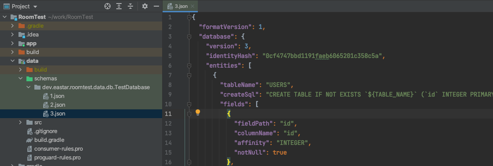

Room Test 2 Migration Test#
Create: 2021년 10월 5일 오후 5:08
Tag: android, db, test
Migration Test#
room database에서는 버전이 있고 이 버전은 프로그램의 변경에 따라
이전 사용자들을 업그레이드 하면서 변경해요. 이걸 마이그레이션 이라 해요
room Migration Test는 다른 test와 좀다르게 불편한 부분이 있고 주의해야 할점도 있어요.
이 글에서 핵심은 Migration Test고 이 부분에 대해서 좀 더심도 있게 다룰 생각이에요.
Gradle#
dependencies {
def room_version = "2.4.0-alpha05"
implementation "androidx.room:room-runtime:$room_version"
kapt "androidx.room:room-compiler:$room_version"
implementation "androidx.room:room-ktx:$room_version"
testImplementation "androidx.room:room-testing:$room_version"
androidTestImplementation "androidx.room:room-testing:$room_version"
}
android {
defaultConfig {
javaCompileOptions {
annotationProcessorOptions {
arguments += [
"room.schemaLocation":"$projectDir/schemas".toString(),
"room.incremental":"true",
"room.expandProjection":"true"]
}
}
}
}
Android Instrumented Test#
comumn add test#
아래와 같은 코드를 test 할꺼에요.
기존의 DB version 1 → 2변경되면서 location과 photo가 추가됐어요.
val MIGRATION_1_2 = object : Migration(1, 2) {
override fun migrate(database: SupportSQLiteDatabase) {
database.execSQL("ALTER TABLE USERS ADD COLUMN location TEXT")
database.execSQL("ALTER TABLE USERS ADD COLUMN photo TEXT")
}
}
Dao에선 UI Thread에서 접근이 불가능하기 때문에 여기서는 Coroutine를 사용했어요.
따라서 다음과 같은 Instrumented Test Code를 만들수 있어요.
class MigrationTest {
companion object {
const val TEST_DB = "migration-test"
}
@get:Rule
val helper: MigrationTestHelper = MigrationTestHelper(
InstrumentationRegistry.getInstrumentation(),
TestDatabase::class.java,
)
@Test
fun migration_1_2() {
//given
helper.createDatabase(TEST_DB, 1).use {
it.execSQL("INSERT INTO USERS ( name,level,date ) VALUES ('eastar', 'Level1' ,0);")
}
//when
helper.runMigrationsAndValidate(TEST_DB, 2, true, MIGRATION_1_2).use {
//then
val cursor = it.query("SELECT COUNT(*) FROM USERS")
cursor.moveToFirst()
val actual = cursor.getLong(0)
cursor.close()
assertThat(actual).isEqualTo(1)
}
}
}
Warning
migration test 는 기본적으로 DB의 구조만 test 해요. DB의 내용이 재대로 변경 됐는지는 직접
asset를 사용해서 확인 해야해요
comumn change test#
이번에는 난이도가 있는 변경 작업을 할려고해요
코드는 길지만 내용은 간단해요.
date의 값이 long를 사용해서 저장 했는데
String를 사용해서 변경 하는 내용입니다.
val MIGRATION_2_3 = object : Migration(2, 3) {
override fun migrate(database: SupportSQLiteDatabase) {
/** copy form data/schemas/dev.eastar.roomtest.data.db.TestDatabase/3.json */
val tempTable =
"""CREATE TABLE IF NOT EXISTS `USERS_3` (`id` INTEGER PRIMARY KEY AUTOINCREMENT NOT NULL, `name` TEXT NOT NULL, `level` TEXT NOT NULL, `date` TEXT NOT NULL, `location` TEXT, `photo` TEXT)"""
database.execSQL(tempTable)
val cursor =
database.query(
"""SELECT
id,
name,
level,
date,
location,
photo
FROM USERS"""
)
while (cursor.moveToNext()) {
val id = cursor.getLong(0)
val name = cursor.getString(1)
val level = cursor.getString(2)
val date = cursor.getLong(3)
val location = cursor.getStringOrNull(4)
val photo = cursor.getStringOrNull(5)
database.execSQL(
"""INSERT INTO USERS_3 (id, name, level, date, location, photo )
VALUES (
$id,
'$name',
'$level',
'${Instant.ofEpochMilli(date).atOffset(ZoneOffset.UTC).toLocalDateTime()}',
${location?.let { "'$location'" } ?: "NULL"},
${photo?.let { "'$photo'" } ?: "NULL"}
);"""
)
}
database.execSQL("DROP TABLE USERS")
database.execSQL("ALTER TABLE USERS_3 RENAME TO USERS")
}
}
Note
migrateion 에서 삭제와 변경을 지원 하지 않기 때문에
dummyTable → 복사 → 원본삭제 → dummyTable이름 변경
이라는 엄청난 과정을 거쳐야 합니다.
migration은 table 구조만 검증해주기 때문에 내용은 직접 검증해야 해요.
그리고 생각보다 Table column type도 일일이 챙겨야 해요
create query 출처
val tempTable = """CREATE TABLE IF NOT EXISTS USERS_3 (id INTEGER PRIMARY KEY AUTOINCREMENT NOT NULL, name TEXT NOT NULL, level TEXT NOT NULL, date TEXT NOT NULL, location TEXT, photo TEXT)"""

아래쪽이 제가 사용하는 table entity인데 생각하는것과 생성된 table이 다를 수 있으니 복사해서 사용하기를 권장드려요.
@Entity(tableName = "USERS")
data class UserEntity(
@PrimaryKey(autoGenerate = true)
val id: Long = 0,
val name: String = "",
val level: Level,
val date: LocalDateTime = LocalDateTime.now().withNano(0),
val location: String? = "geo:${Random.latitude},${Random.longitude}",
val photo: String? = "https://picsum.photos/id/${Random.nextInt(100)}/100/100",
)
test code
class MigrationTest {
companion object {
const val TEST_DB = "migration-test"
}
@get:Rule
val helper: MigrationTestHelper = MigrationTestHelper(
InstrumentationRegistry.getInstrumentation(),
TestDatabase::class.java,
)
@Test
fun migration_2_3() {
//given
helper.createDatabase(TEST_DB, 2).use {
/** 0 => UTC 1970-01-01 00:00:00.000 */
it.execSQL("INSERT INTO USERS ( name,level,date,location,photo ) VALUES ('eastar', 'Level1' ,0,NULL,NULL);")
}
//when
helper.runMigrationsAndValidate(TEST_DB, 3, true, MIGRATION_2_3).use {
//then
val cursor = it.query("SELECT id,name,level,date,location,photo FROM USERS")
cursor.moveToFirst()
val id = cursor.getLong(0)//id
val date = cursor.getString(3)//date
val location = cursor.getStringOrNull(4)//location
cursor.close()
assertThat(id).isEqualTo(1)
assertThat(DateConverter.text2LocalDateTime(date))
.isEqualTo(DateConverter.text2LocalDateTime("1970-01-01T00:00:00.000"))
assertThat(location).isNull()
}
}
}
All Migration Test#
이번 test 할내용은 1→3까지 모든 migration을 Test 하는 방법을 확인 해볼께요.
test code
class MigrationTest {
companion object {
const val TEST_DB = "migration-test"
}
@get:Rule
val helper: MigrationTestHelper = MigrationTestHelper(
InstrumentationRegistry.getInstrumentation(),
TestDatabase::class.java,
)
@Test
@Throws(IOException::class)
fun migrateAll() {
helper.createDatabase(TEST_DB, 1).use { }
Room.databaseBuilder(
InstrumentationRegistry.getInstrumentation().targetContext,
TestDatabase::class.java,
TEST_DB
).addMigrations(MIGRATION_1_2, MIGRATION_2_3).build().apply {
openHelper.writableDatabase
close()
}
}
}
Warning
migration test 는 기본적으로 DB의 구조만 test 해요. DB의 내용이 재대로 변경 됐는지는 직접
asset를 사용해서 확인 해야해요
Unit Test#
Unit Test에서 test를 할려면 크게 다르지 않아요 다만. Robolectric을 사용해야 합니다.
덤으로 실행중 오류가 발생하는것도 포함이에요.
Robolectric#
gradle
//robolectric
dependencies {
testImplementation 'org.robolectric:robolectric:4.5.1'
testImplementation 'androidx.test.ext:junit-ktx:1.1.3'
}
android {
testOptions {
unitTests {
includeAndroidResources = true
}
}
}
unit test code
@Config(sdk = [30])
@RunWith(RobolectricTestRunner::class)
class TestDatabaseUnitTest {
...
제가 알고 있는 가장 간단한 Robolectric사용법이에요
unit test code#
-
android test 랑 동일합니다.
@Config(sdk = [30]) @RunWith(RobolectricTestRunner::class) class MigrationUnitTest { companion object { const val TEST_DB = "migration-test" } @get:Rule val helper: MigrationTestHelper = MigrationTestHelper( InstrumentationRegistry.getInstrumentation(), TestDatabase::class.java, ) @Test @Throws(IOException::class) fun migrateAll() { helper.createDatabase(TEST_DB, 1).use { } Room.databaseBuilder( InstrumentationRegistry.getInstrumentation().targetContext, TestDatabase::class.java, TEST_DB ).addMigrations(MIGRATION_1_2, MIGRATION_2_3).build().apply { openHelper.writableDatabase close() } } @Test fun migration_1_2() { //given helper.createDatabase(TEST_DB, 1).use { it.execSQL("INSERT INTO USERS ( name,level,date ) VALUES ('eastar', 'Level1' ,0);") } //when helper.runMigrationsAndValidate(TEST_DB, 2, true, MIGRATION_1_2).use { //then val cursor = it.query("SELECT COUNT(*) FROM USERS") cursor.moveToFirst() val actual = cursor.getLong(0) cursor.close() assertThat(actual).isEqualTo(1) } } @Test fun migration_2_3() { //given helper.createDatabase(TEST_DB, 2).use { /** 0 => UTC 1970-01-01 00:00:00.000 */ it.execSQL("INSERT INTO USERS ( name,level,date,location,photo ) VALUES ('eastar', 'Level1' ,0,NULL,NULL);") } //when helper.runMigrationsAndValidate(TEST_DB, 3, true, MIGRATION_2_3).use { //then val cursor = it.query("SELECT id,name,level,date,location,photo FROM USERS") cursor.moveToFirst() val id = cursor.getLong(0)//id val date = cursor.getString(3)//date val location = cursor.getStringOrNull(4)//location cursor.close() assertThat(id).isEqualTo(1) assertThat(DateConverter.text2LocalDateTime(date)) .isEqualTo(DateConverter.text2LocalDateTime("1970-01-01T00:00:00.000")) assertThat(location).isNull() } } }
다만 아래와 같은 오류가 발생합니다.
Cannot find the schema file in the assets folder. Make sure to include the exported json schemas in your test assert inputs. See https://developer.android.com/training/data-storage/room/migrating-db-versions#export-schema for details. Missing file: dev.eastar.roomtest.data.db.TestDatabase/1.json
java.io.FileNotFoundException: Cannot find the schema file in the assets folder. Make sure to include the exported json schemas in your test assert inputs. See https://developer.android.com/training/data-storage/room/migrating-db-versions#export-schema for details. Missing file: dev.eastar.roomtest.data.db.TestDatabase/1.json
at androidx.room.testing.MigrationTestHelper.loadSchema(MigrationTestHelper.java:484)
at androidx.room.testing.MigrationTestHelper.createDatabase(MigrationTestHelper.java:238)
at dev.eastar.roomtest.data.db.MigrationUnitTest.migrateAll(MigrationUnitTest.kt:33)
at java.base/jdk.internal.reflect.NativeMethodAccessorImpl.invoke0(Native Method)
at java.base/jdk.internal.reflect.NativeMethodAccessorImpl.invoke(NativeMethodAccessorImpl.java:62)
at java.base/jdk.internal.reflect.DelegatingMethodAccessorImpl.invoke(DelegatingMethodAccessorImpl.java:43)
at java.base/java.lang.reflect.Method.invoke(Method.java:566)
at org.junit.runners.model.FrameworkMethod$1.runReflectiveCall(FrameworkMethod.java:59)
at org.junit.internal.runners.model.ReflectiveCallable.run(ReflectiveCallable.java:12)
at org.junit.runners.model.FrameworkMethod.invokeExplosively(FrameworkMethod.java:56)
at org.junit.internal.runners.statements.InvokeMethod.evaluate(InvokeMethod.java:17)
at org.junit.rules.TestWatcher$1.evaluate(TestWatcher.java:61)
at org.junit.runners.ParentRunner$3.evaluate(ParentRunner.java:306)
at org.robolectric.RobolectricTestRunner$HelperTestRunner$1.evaluate(RobolectricTestRunner.java:575)
at org.robolectric.internal.SandboxTestRunner$2.lambda$evaluate$0(SandboxTestRunner.java:278)
at org.robolectric.internal.bytecode.Sandbox.lambda$runOnMainThread$0(Sandbox.java:89)
at java.base/java.util.concurrent.FutureTask.run(FutureTask.java:264)
at java.base/java.util.concurrent.ThreadPoolExecutor.runWorker(ThreadPoolExecutor.java:1128)
at java.base/java.util.concurrent.ThreadPoolExecutor$Worker.run(ThreadPoolExecutor.java:628)
at java.base/java.lang.Thread.run(Thread.java:834)
요약하면 exported json schemas가 안된것 같으니 다음 주소에 가서 자세한건 확인해봐라.
못찾은 파일은 ~~ .json파일이다. 란 내용입니다.
해당 주소에 가서보면 이미 설정한 gradle setting에 대한 이야기를 하고 있네요.
Cannot find the schema file in the assets folder.
Make sure to include the exported json schemas in your test assert inputs.
See https://developer.android.com/training/data-storage/room/migrating-db-versions#export-schema for details.
Missing file: dev.eastar.roomtest.data.db.TestDatabase/1.json
-
아래 내용을 꼭 넣어야 되요
public class MigrationTestHelper extends TestWatcher { private static final String TAG = "MigrationTestHelper"; private final String mAssetsFolder; private final SupportSQLiteOpenHelper.Factory mOpenFactory; private List<WeakReference<SupportSQLiteDatabase>> mManagedDatabases = new ArrayList<>(); private List<WeakReference<RoomDatabase>> mManagedRoomDatabases = new ArrayList<>(); private boolean mTestStarted; private Instrumentation mInstrumentation; @Nullable private List<AutoMigrationSpec> mSpecs; @Nullable private Class<? extends RoomDatabase> mDatabaseClass; /** * Creates a new migration helper. It uses the Instrumentation context to load the schema * (falls back to the app resources) and the target context to create the database. * * @deprecated Cannot be used to run migration tests involving {@link AutoMigration}. * <p> * To test {@link AutoMigration}, you must use * {@link #MigrationTestHelper(Instrumentation, Class, List, SupportSQLiteOpenHelper.Factory)} * for tests containing a {@link androidx.room.ProvidedAutoMigrationSpec}, or use * {@link #MigrationTestHelper(Instrumentation, Class, List)} * otherwise. * * @param instrumentation The instrumentation instance. * @param assetsFolder The asset folder in the assets directory. */ @Deprecated public MigrationTestHelper(Instrumentation instrumentation, String assetsFolder) { this(instrumentation, assetsFolder, new FrameworkSQLiteOpenHelperFactory()); } /** * Creates a new migration helper. It uses the Instrumentation context to load the schema * (falls back to the app resources) and the target context to create the database. * * @deprecated Cannot be used to run migration tests involving {@link AutoMigration}. * <p> * To test {@link AutoMigration}, you must use * {@link #MigrationTestHelper(Instrumentation, Class, List, SupportSQLiteOpenHelper.Factory)} * for tests containing a {@link androidx.room.ProvidedAutoMigrationSpec}, or use * {@link #MigrationTestHelper(Instrumentation, Class, List)} * otherwise. * * @param instrumentation The instrumentation instance. * @param assetsFolder The asset folder in the assets directory. * @param openFactory Factory class that allows creation of {@link SupportSQLiteOpenHelper} */ @Deprecated public MigrationTestHelper(Instrumentation instrumentation, String assetsFolder, SupportSQLiteOpenHelper.Factory openFactory) { mInstrumentation = instrumentation; mAssetsFolder = assetsFolder; mOpenFactory = openFactory; mDatabaseClass = null; mSpecs = new ArrayList<>(); } /** * Creates a new migration helper. It uses the Instrumentation context to load the schema * (falls back to the app resources) and the target context to create the database. * * @param instrumentation The instrumentation instance. * @param databaseClass The Database class to be tested. */ public MigrationTestHelper(@NonNull Instrumentation instrumentation, @NonNull Class<? extends RoomDatabase> databaseClass) { this(instrumentation, databaseClass, new ArrayList<>(), new FrameworkSQLiteOpenHelperFactory()); } /** * Creates a new migration helper. It uses the Instrumentation context to load the schema * (falls back to the app resources) and the target context to create the database. * <p> * An instance of a class annotated with {@link androidx.room.ProvidedAutoMigrationSpec} has * to be provided to Room using this constructor. MigrationTestHelper will map auto migration * spec classes to their provided instances before running and validatingt the Migrations. * * @param instrumentation The instrumentation instance. * @param databaseClass The Database class to be tested. * @param specs The list of available auto migration specs that will be provided to * Room at runtime. */ public MigrationTestHelper(@NonNull Instrumentation instrumentation, @NonNull Class<? extends RoomDatabase> databaseClass, @NonNull List<AutoMigrationSpec> specs) { this(instrumentation, databaseClass, specs, new FrameworkSQLiteOpenHelperFactory()); } /** * Creates a new migration helper. It uses the Instrumentation context to load the schema * (falls back to the app resources) and the target context to create the database. * <p> * An instance of a class annotated with {@link androidx.room.ProvidedAutoMigrationSpec} has * to be provided to Room using this constructor. MigrationTestHelper will map auto migration * spec classes to their provided instances before running and validatingt the Migrations. * * @param instrumentation The instrumentation instance. * @param databaseClass The Database class to be tested. * @param specs The list of available auto migration specs that will be provided to * Room at runtime. * @param openFactory Factory class that allows creation of {@link SupportSQLiteOpenHelper} */ public MigrationTestHelper(@NonNull Instrumentation instrumentation, @NonNull Class<? extends RoomDatabase> databaseClass, @NonNull List<AutoMigrationSpec> specs, @NonNull SupportSQLiteOpenHelper.Factory openFactory ) { String assetsFolder = databaseClass.getCanonicalName(); mInstrumentation = instrumentation; if (assetsFolder.endsWith("/")) { assetsFolder = assetsFolder.substring(0, assetsFolder.length() - 1); } mAssetsFolder = assetsFolder; mOpenFactory = openFactory; mDatabaseClass = databaseClass; mSpecs = specs; } @Override protected void starting(Description description) { super.starting(description); mTestStarted = true; } /** * Creates the database in the given version. * If the database file already exists, it tries to delete it first. If delete fails, throws * an exception. * * @param name The name of the database. * @param version The version in which the database should be created. * @return A database connection which has the schema in the requested version. * @throws IOException If it cannot find the schema description in the assets folder. */ @SuppressLint("RestrictedApi") @SuppressWarnings("SameParameterValue") public SupportSQLiteDatabase createDatabase(String name, int version) throws IOException { File dbPath = mInstrumentation.getTargetContext().getDatabasePath(name); if (dbPath.exists()) { Log.d(TAG, "deleting database file " + name); if (!dbPath.delete()) { throw new IllegalStateException("There is a database file and I could not delete" + " it. Make sure you don't have any open connections to that database" + " before calling this method."); } } SchemaBundle schemaBundle = loadSchema(version); RoomDatabase.MigrationContainer container = new RoomDatabase.MigrationContainer(); DatabaseConfiguration configuration = new DatabaseConfiguration( mInstrumentation.getTargetContext(), name, mOpenFactory, container, null, true, RoomDatabase.JournalMode.TRUNCATE, ArchTaskExecutor.getIOThreadExecutor(), ArchTaskExecutor.getIOThreadExecutor(), false, true, false, Collections.<Integer>emptySet(), null, null, null, null, null, null); RoomOpenHelper roomOpenHelper = new RoomOpenHelper(configuration, new CreatingDelegate(schemaBundle.getDatabase()), schemaBundle.getDatabase().getIdentityHash(), // we pass the same hash twice since an old schema does not necessarily have // a legacy hash and we would not even persist it. schemaBundle.getDatabase().getIdentityHash()); return openDatabase(name, roomOpenHelper); } /** * Runs the given set of migrations on the provided database. * <p> * It uses the same algorithm that Room uses to choose migrations so the migrations instances * that are provided to this method must be sufficient to bring the database from current * version to the desired version. * <p> * After the migration, the method validates the database schema to ensure that migration * result matches the expected schema. Handling of dropped tables depends on the * {@code validateDroppedTables} argument. If set to true, the verification will fail if it * finds a table that is not registered in the Database. If set to false, extra tables in the * database will be ignored (this is the runtime library behavior). * * @param name The database name. You must first create this database via * {@link #createDatabase(String, int)}. * @param version The final version after applying the migrations. * @param validateDroppedTables If set to true, validation will fail if the database has * unknown * tables. * @param migrations The list of available migrations. * @throws IOException If it cannot find the schema for {@code toVersion}. * @throws IllegalStateException If the schema validation fails. */ @SuppressLint("RestrictedApi") public SupportSQLiteDatabase runMigrationsAndValidate(String name, int version, boolean validateDroppedTables, Migration... migrations) throws IOException { File dbPath = mInstrumentation.getTargetContext().getDatabasePath(name); if (!dbPath.exists()) { throw new IllegalStateException("Cannot find the database file for " + name + ". " + "Before calling runMigrations, you must first create the database via " + "createDatabase."); } SchemaBundle schemaBundle = loadSchema(version); RoomDatabase.MigrationContainer container = new RoomDatabase.MigrationContainer(); container.addMigrations(getAutoMigrations(mSpecs)); container.addMigrations(migrations); DatabaseConfiguration configuration = new DatabaseConfiguration( mInstrumentation.getTargetContext(), name, mOpenFactory, container, null, true, RoomDatabase.JournalMode.TRUNCATE, ArchTaskExecutor.getIOThreadExecutor(), ArchTaskExecutor.getIOThreadExecutor(), false, true, false, Collections.<Integer>emptySet(), null, null, null, null, null, null); RoomOpenHelper roomOpenHelper = new RoomOpenHelper(configuration, new MigratingDelegate(schemaBundle.getDatabase(), validateDroppedTables), // we pass the same hash twice since an old schema does not necessarily have // a legacy hash and we would not even persist it. schemaBundle.getDatabase().getIdentityHash(), schemaBundle.getDatabase().getIdentityHash()); return openDatabase(name, roomOpenHelper); } /** * Returns a list of {@link Migration} of a database that has been generated using * {@link AutoMigration}. */ @NonNull private List<Migration> getAutoMigrations(List<AutoMigrationSpec> userProvidedSpecs) { if (mDatabaseClass == null) { if (userProvidedSpecs.isEmpty()) { // TODO: Detect that there are auto migrations to test when a deprecated // constructor is used. Log.e(TAG, "If you have any AutoMigrations in your implementation, you must use " + "a non-deprecated MigrationTestHelper constructor to provide the " + "Database class in order to test them. If you do not have any " + "AutoMigrations to test, you may ignore this warning."); return new ArrayList<>(); } else { throw new IllegalStateException("You must provide the database class in the " + "MigrationTestHelper constructor in order to test auto migrations."); } } RoomDatabase db = Room.getGeneratedImplementation(mDatabaseClass, "_Impl"); Set<Class<? extends AutoMigrationSpec>> requiredAutoMigrationSpecs = db.getRequiredAutoMigrationSpecs(); return db.getAutoMigrations( createAutoMigrationSpecMap(requiredAutoMigrationSpecs, userProvidedSpecs) ); } /** * Maps auto migration spec classes to their provided instance. */ private Map<Class<? extends AutoMigrationSpec>, AutoMigrationSpec> createAutoMigrationSpecMap( Set<Class<? extends AutoMigrationSpec>> requiredAutoMigrationSpecs, List<AutoMigrationSpec> userProvidedSpecs) { Map<Class<? extends AutoMigrationSpec>, AutoMigrationSpec> specMap = new HashMap<>(); if (requiredAutoMigrationSpecs.isEmpty()) { return specMap; } if (userProvidedSpecs == null) { throw new IllegalStateException( "You must provide all required auto migration specs in the " + "MigrationTestHelper constructor." ); } for (Class<? extends AutoMigrationSpec> spec : requiredAutoMigrationSpecs) { boolean found = false; AutoMigrationSpec match = null; for (AutoMigrationSpec provided : userProvidedSpecs) { if (spec.isAssignableFrom(provided.getClass())) { found = true; match = provided; break; } } if (!found) { throw new IllegalArgumentException( "A required auto migration spec (" + spec.getCanonicalName() + ") has not" + " been provided." ); } specMap.put(spec, match); } return specMap; } private SupportSQLiteDatabase openDatabase(String name, RoomOpenHelper roomOpenHelper) { SupportSQLiteOpenHelper.Configuration config = SupportSQLiteOpenHelper.Configuration .builder(mInstrumentation.getTargetContext()) .callback(roomOpenHelper) .name(name) .build(); SupportSQLiteDatabase db = mOpenFactory.create(config).getWritableDatabase(); mManagedDatabases.add(new WeakReference<>(db)); return db; } @Override protected void finished(Description description) { super.finished(description); for (WeakReference<SupportSQLiteDatabase> dbRef : mManagedDatabases) { SupportSQLiteDatabase db = dbRef.get(); if (db != null && db.isOpen()) { try { db.close(); } catch (Throwable ignored) { } } } for (WeakReference<RoomDatabase> dbRef : mManagedRoomDatabases) { final RoomDatabase roomDatabase = dbRef.get(); if (roomDatabase != null) { roomDatabase.close(); } } } /** * Registers a database connection to be automatically closed when the test finishes. * <p> * This only works if {@code MigrationTestHelper} is registered as a Junit test rule via * {@link org.junit.Rule Rule} annotation. * * @param db The database connection that should be closed after the test finishes. */ public void closeWhenFinished(SupportSQLiteDatabase db) { if (!mTestStarted) { throw new IllegalStateException("You cannot register a database to be closed before" + " the test starts. Maybe you forgot to annotate MigrationTestHelper as a" + " test rule? (@Rule)"); } mManagedDatabases.add(new WeakReference<>(db)); } /** * Registers a database connection to be automatically closed when the test finishes. * <p> * This only works if {@code MigrationTestHelper} is registered as a Junit test rule via * {@link org.junit.Rule Rule} annotation. * * @param db The RoomDatabase instance which holds the database. */ public void closeWhenFinished(RoomDatabase db) { if (!mTestStarted) { throw new IllegalStateException("You cannot register a database to be closed before" + " the test starts. Maybe you forgot to annotate MigrationTestHelper as a" + " test rule? (@Rule)"); } mManagedRoomDatabases.add(new WeakReference<>(db)); } private SchemaBundle loadSchema(int version) throws IOException { try { return loadSchema(mInstrumentation.getContext(), version); } catch (FileNotFoundException testAssetsIOExceptions) { Log.w(TAG, "Could not find the schema file in the test assets. Checking the" + " application assets"); try { return loadSchema(mInstrumentation.getTargetContext(), version); } catch (FileNotFoundException appAssetsException) { // throw the test assets exception instead throw new FileNotFoundException("Cannot find the schema file in the assets folder. " + "Make sure to include the exported json schemas in your test assert " + "inputs. See " + "https://developer.android.com/training/data-storage/room/" + "migrating-db-versions#export-schema for details. Missing file: " + testAssetsIOExceptions.getMessage()); } } } private SchemaBundle loadSchema(Context context, int version) throws IOException { // InputStream input = context.getAssets().open(mAssetsFolder + "/" + version + ".json"); InputStream input = new FileInputStream("./schemas/" + mAssetsFolder + "/" + version + ".json"); return SchemaBundle.deserialize(input); } @SuppressWarnings("WeakerAccess") /* synthetic access */ static TableInfo toTableInfo(EntityBundle entityBundle) { return new TableInfo(entityBundle.getTableName(), toColumnMap(entityBundle), toForeignKeys(entityBundle.getForeignKeys()), toIndices(entityBundle.getIndices())); } @SuppressWarnings("WeakerAccess") /* synthetic access */ static FtsTableInfo toFtsTableInfo(FtsEntityBundle ftsEntityBundle) { return new FtsTableInfo(ftsEntityBundle.getTableName(), toColumnNamesSet(ftsEntityBundle), ftsEntityBundle.getCreateSql()); } @SuppressWarnings("WeakerAccess") /* synthetic access */ static ViewInfo toViewInfo(DatabaseViewBundle viewBundle) { return new ViewInfo(viewBundle.getViewName(), viewBundle.createView()); } private static Set<TableInfo.Index> toIndices(List<IndexBundle> indices) { if (indices == null) { return Collections.emptySet(); } Set<TableInfo.Index> result = new HashSet<>(); for (IndexBundle bundle : indices) { result.add(new TableInfo.Index(bundle.getName(), bundle.isUnique(), bundle.getColumnNames())); } return result; } private static Set<TableInfo.ForeignKey> toForeignKeys( List<ForeignKeyBundle> bundles) { if (bundles == null) { return Collections.emptySet(); } Set<TableInfo.ForeignKey> result = new HashSet<>(bundles.size()); for (ForeignKeyBundle bundle : bundles) { result.add(new TableInfo.ForeignKey(bundle.getTable(), bundle.getOnDelete(), bundle.getOnUpdate(), bundle.getColumns(), bundle.getReferencedColumns())); } return result; } private static Set<String> toColumnNamesSet(EntityBundle entity) { Set<String> result = new HashSet<>(); for (FieldBundle field : entity.getFields()) { result.add(field.getColumnName()); } return result; } private static Map<String, TableInfo.Column> toColumnMap(EntityBundle entity) { Map<String, TableInfo.Column> result = new HashMap<>(); for (FieldBundle bundle : entity.getFields()) { TableInfo.Column column = toColumn(entity, bundle); result.put(column.name, column); } return result; } private static TableInfo.Column toColumn(EntityBundle entity, FieldBundle field) { return new TableInfo.Column(field.getColumnName(), field.getAffinity(), field.isNonNull(), findPrimaryKeyPosition(entity, field), field.getDefaultValue(), TableInfo.CREATED_FROM_ENTITY); } private static int findPrimaryKeyPosition(EntityBundle entity, FieldBundle field) { List<String> columnNames = entity.getPrimaryKey().getColumnNames(); int i = 0; for (String columnName : columnNames) { i++; if (field.getColumnName().equalsIgnoreCase(columnName)) { return i; } } return 0; } static class MigratingDelegate extends RoomOpenHelperDelegate { private final boolean mVerifyDroppedTables; MigratingDelegate(DatabaseBundle databaseBundle, boolean verifyDroppedTables) { super(databaseBundle); mVerifyDroppedTables = verifyDroppedTables; } @Override protected void createAllTables(SupportSQLiteDatabase database) { throw new UnsupportedOperationException("Was expecting to migrate but received create." + "Make sure you have created the database first."); } @NonNull @Override protected ValidationResult onValidateSchema( @NonNull SupportSQLiteDatabase db) { final Map<String, EntityBundle> tables = mDatabaseBundle.getEntitiesByTableName(); for (EntityBundle entity : tables.values()) { if (entity instanceof FtsEntityBundle) { final FtsTableInfo expected = toFtsTableInfo((FtsEntityBundle) entity); final FtsTableInfo found = FtsTableInfo.read(db, entity.getTableName()); if (!expected.equals(found)) { return new ValidationResult(false, expected.name + "\nExpected: " + expected + "\nFound: " + found); } } else { final TableInfo expected = toTableInfo(entity); final TableInfo found = TableInfo.read(db, entity.getTableName()); if (!expected.equals(found)) { return new ValidationResult(false, expected.name + "\nExpected: " + expected + " \nfound: " + found); } } } for (DatabaseViewBundle view : mDatabaseBundle.getViews()) { final ViewInfo expected = toViewInfo(view); final ViewInfo found = ViewInfo.read(db, view.getViewName()); if (!expected.equals(found)) { return new ValidationResult(false, expected + "\nExpected: " + expected + " \nfound: " + found); } } if (mVerifyDroppedTables) { // now ensure tables that should be removed are removed. Set<String> expectedTables = new HashSet<>(); for (EntityBundle entity : tables.values()) { expectedTables.add(entity.getTableName()); if (entity instanceof FtsEntityBundle) { expectedTables.addAll(((FtsEntityBundle) entity).getShadowTableNames()); } } Cursor cursor = db.query("SELECT name FROM sqlite_master WHERE type='table'" + " AND name NOT IN(?, ?, ?)", new String[]{Room.MASTER_TABLE_NAME, "android_metadata", "sqlite_sequence"}); //noinspection TryFinallyCanBeTryWithResources try { while (cursor.moveToNext()) { final String tableName = cursor.getString(0); if (!expectedTables.contains(tableName)) { return new ValidationResult(false, "Unexpected table " + tableName); } } } finally { cursor.close(); } } return new ValidationResult(true, null); } } static class CreatingDelegate extends RoomOpenHelperDelegate { CreatingDelegate(DatabaseBundle databaseBundle) { super(databaseBundle); } @Override protected void createAllTables(SupportSQLiteDatabase database) { for (String query : mDatabaseBundle.buildCreateQueries()) { database.execSQL(query); } } @NonNull @Override protected ValidationResult onValidateSchema( @NonNull SupportSQLiteDatabase db) { throw new UnsupportedOperationException("This open helper just creates the database but" + " it received a migration request."); } } abstract static class RoomOpenHelperDelegate extends RoomOpenHelper.Delegate { final DatabaseBundle mDatabaseBundle; RoomOpenHelperDelegate(DatabaseBundle databaseBundle) { super(databaseBundle.getVersion()); mDatabaseBundle = databaseBundle; } @Override protected void dropAllTables(SupportSQLiteDatabase database) { throw new UnsupportedOperationException("cannot drop all tables in the test"); } @Override protected void onCreate(SupportSQLiteDatabase database) { } @Override protected void onOpen(SupportSQLiteDatabase database) { } } }
파일에 출처는 위치를 추적해서 디컴파일한 코드에요. 권장은 https://cs.android.com/ 에서 코드를 찾으셔서 넣는게 좋습니다.
import androidx.room.testing.MigrationTestHelper
이 파일을 그냥 넣으시면 안되고
unit test에서 getAssets()을 통해 1.json 파일을 읽을 수 없어서 나오는 오류이기 때문에
해당 부분을 수정해서 넣습니다.
아래는 변경한 부분은 이에요.
private SchemaBundle loadSchema(Context context, int version) throws IOException {
// InputStream input = context.getAssets().open(mAssetsFolder + "/" + version + ".json");
InputStream input = new FileInputStream("./schemas/" + mAssetsFolder + "/" + version + ".json");
return SchemaBundle.deserialize(input);
}
변경된 파일을 test코드에 넣으시고 import를 변경해주시면 됩니다.
//import androidx.room.testing.MigrationTestHelper
import dev.eastar.room.testing.MigrationTestHelper
이제 UnitTest를 돌려 볼까요?

👏 👏 👏
수고 하셨습니다.
TL;DR#
Sample Code
GitHub - eastar-dev/RoomTest: room migrations